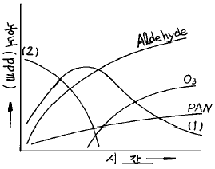
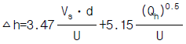
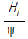
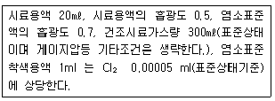

대기환경기사 (2003-08-31 기출문제)
1과목: 대기오염 개론
1. 비스코스, 섬유공업에서 많이 발생하는 대기오염 물질로 순수한 액체는 상온에서 무색이고 햇빛에 파괴될 정도로 불안정하지만 부식성은 비교적 약하며 공기보다 2.64배 정도 무거운 것은?
- HCl
- Cl2
- SO2
- CS2
(정답률: 알수없음)

2. 다음 그림은 자동차 배출가스를 Air Chamber에 넣고 자외선을 쪼였을 때 발생하는 각종 가스 성분의 농도 변화를 표시한 것이다. (1) 및 (2)에 넣어야 할 적당한 물질로 구성된 것은?

- (1)→ NO (2)→ HC
- (1)→ NO (2)→ NO2
- (1)→ HC (2)→ NO
- (1)→ NO2 (2)→ NO
(정답률: 알수없음)
3. 다음의 대기오염 물질 중에 물에 가장 잘 녹는 것은?
- HCl
- HCHO
- SO2
- CO2
(정답률: 28%)
4. 다음은 질소산화물(NOχ )에 대한 설명이다. 틀리는 것은?
- NOχ 의 인위적 배출량중 거의 대부분이 연소과정에서 발생된다.
- NOχ 는 그 자체도 인체에 해롭지만 광화학 스모그의 원인 물질로 중요한 역활을 한다.
- 연소과정에서 처음 발생되는 NOχ는 주로 NO2이다.
- 연소시 연료중 질소의 NO변환율은 연료의 종류와 연소방법에 따라 차이가 있으나 대체로 약 20-50% 범위이다.
(정답률: 알수없음)
5. 최근 대기오염 물질의 장거리 이동에 대한 많은 보고가 나오고 있어 대기오염 물질의 제어는 한 지역의 문제가 아니라 전 지구적인 감시와 조절이 절실히 요구되어지고 있다. 특히 매년 증가하고 있어 많은 문제를 안고 있는 CO2의 순환과정을 설명한 다음 내용 중 틀린 것은?(오류 신고가 접수된 문제입니다. 반드시 정답과 해설을 확인하시기 바랍니다.)
- 대기중의 CO2 농도는 여름에 감소하고 겨울에 증가한다.
- 지구의 북반구 대기중의 CO2농도가 남반구보다 높다.
- 대기중의 CO2는 바다에 많은 양이 흡수되나 식물에 의한 흡수량보다는 작다.
- 대기중의 자연농도는 350ppm정도이며 체류시간은 대체로 2∼4년이다.
(정답률: 알수없음)
6. '코리올리(Coriolis)'의 힘에 관한 설명으로 틀린 것은?
- 지구 자전에 의해 생기는 가속도를 전향가속도라 하고 가속도에 의한 힘을 코리올리의 힘이라 한다.
- 전향력이라 하며 바람의 방향만을 변화시킬 뿐 속도에는 영향을 미치지 않는다.
- 코리올리 힘의 크기는 지구 반경이 가장 큰 적도 지방에서 최대가 되며 극지방에서는 최소가 된다.
- 코리올리의 힘에 의해 북반부에서는 진로의 오른쪽 방향으로 바람의 방향이 변화된다.
(정답률: 40%)
7. 태양복사는 지면에 도달하기 전에 지구대기에 있는 여러 물질에 의해 흡수되거나 굴절, 산란되어 일사량의 감쇄를 초래하는데 대기중에 먼지나 입자의 직경이 전자파의 파장과 거의 같거나 큰 대기오염물질이 대기중에 많이 존재할 경우 하늘은 백색이나 뿌옇게 흐려져 일사량의 감소를 초래하며 간접적으로 대기오염도를 예측할 수 있다. 이와 같은 현상을 설명하는 용어로 가장 알맞는 것은?
- 연료산란(Fuel scattering)
- 미산란(Mie scattering)
- 광학 산란(Optical scattering)
- 대기 약산란( Air scattering)
(정답률: 알수없음)
8. 연기의 퍼지는 모양에서 가우시안 확산모델(Gaussian diffusion model)을 적용할 수 있는 가장 이상적인 형태의 연기는?
- fanning
- lofting
- conning
- fumigation
(정답률: 알수없음)
9. 불안정한 상태에서의 Moses와 Carson 의 plume rise 식은

이다. 연도가스의 열 방출열은 5000 KJ/s 이고 풍속 및 연도가스의 배출유속은 5 m/s, 15 m/s 이다. 연도 상부의 내경이 2m 일 때, 위 공식에 의한 plume rise(연기의 상승고)는?- 98.4 m
- 93.7 m
- 85.8 m
- 78.5 m
(정답률: 42%)
10. 리차드슨 수(Richardson number)에 관한 설명으로 알맞는 것은?
- 리차드슨 수가 커질수록 기층은 안정함을 나타낸다
- 리차드슨 수가 작아질수록 기층은 안정함을 나타낸다
- 리차드슨 수가 커질수록 기층은 중립임을 나타낸다
- 리차드슨 수가 작아질수록 기층은 중립임을 나타낸다
(정답률: 34%)
11. 시안화수소(HCN)의 1.0 V/V ppm에 해당하는 W/Wppm 값은? (단, 0℃,1기압,공기밀도 1.293kg/m3)
- 0.93 ppm
- 1.14 ppm
- 1.64 ppm
- 2.13 ppm
(정답률: 알수없음)
12. '지균풍'에 관한 설명으로 틀린 것은?
- 대기경계층 상부 즉 고도 1km이상의 상공에서 등압선이 직선일 때 등압선에 평행으로 부는 바람이다
- 고공풍이므로 마찰력의 영향이 없고 원심력의 영향도 거의 없다
- 지균풍에 영향을 주는 기압경도력과 전향력은 크기가 같고 방향이 반대이다
- 북반구에서는 기압경도력이 감소하여 반시계방향으로 바람이 불게 된다
(정답률: 25%)
13. PSI(pollutants standard index) 지수가 150 일때 대기질 상태는?
- 양호(good)
- 보통(moderate)
- 나쁨(unhealthful)
- 매우 나쁨(very unhealthful)
(정답률: 46%)
14. 다음의 실내오염물질 중에서 건축자재에서 발생하는 오염 물질끼리 짝 지위진 것은?
- 석면-라돈-포름알데히드
- 석면-라돈-암모니아
- 석면-암모니아-휘발성 유기화합물
- 석면-포름알데히드-암모니아
(정답률: 알수없음)
15. 대기 안정도(stability)에 영향을 미치는 인자와 가장 거리가 먼 것은?
- 풍향
- 풍속
- 일사량
- 운량
(정답률: 알수없음)
16. 유해화학물질의 생산, 저장, 수송중의 사고로 인해 일어나는 대기오염 재해지역과 원인물질이 바르지 않은 것은?
- 체르노빌 - 방사능물질
- 포자리카 - 황화수소
- 세베소 - 다이옥신
- 보팔 - 이산화황
(정답률: 알수없음)
17. 0℃, 1기압하에서 SO2 20ppm은 몇 ㎎/Nm3인가?
- 57.14
- 41.33
- 30.66
- 26.62
(정답률: 알수없음)
18. 수용모델(receptor model)에 대한 설명과 가장 거리가 먼 것은?
- 측정자료를 입력하므로 시나리오 작성이 가능하고 미래의 대기질 예측이 용이하다
- 대기오염배출원이 주변지역에 미치는 영향 또는 기여도를 수리통계학적으로 분석하는 것이다.
- 질량보전의 법칙과 질량수지 개념에 바탕을 두고 유도가 시작된다.
- 적용범위는 도시단위의 소규모에서 최근에는 국가 단위의 중규모까지 확장되고 있고, 분산모델의 결과를 확인하는 역할을 하고 있다.
(정답률: 알수없음)
19. 입자상물질의 농도가 200㎍/m3이고, 상대습도가 70%인 상태의 대도시에서의 가시거리는 몇 km인가? (단, A=1.3)
- 2.5km
- 4.5km
- 6.5km
- 8.5km
(정답률: 알수없음)
20. 다음 중 바람쏠림(wind shear)에 관한 설명으로 알맞지 않는 것은?
- 복잡하지 않는 지형의 상공에서 풍향이 고도에 따라 변하는 것을 말한다
- 지표와 경도풍이 부는 높이까지의 대기층에서 약 15 - 30° 가량 시계바늘 진행 방향으로 쏠리는 것이 보통이다
- 풍속이 6m/sec 이하일 때는 풍향의 변화가 커진다
- 지형의 거칠기에 따른 고도별 풍향변화를 쉽게 파악할 수 있도록 부챗살 모양으로 나타낸다
(정답률: 알수없음)
2과목: 연소공학
21. 프로판(C3H8)을 공기비 1.2로 연소할 때 저위 발열량은 2038.96 MJ/kmol이다. 이때의 단열온도는? (단, 공기와 메탄의 엔탈피는 무시하고 단열연소온도와 관계식은 t =

, Ψ = 0.027 [MJ/kg-K] 이다.)- 578 [K]
- 1023 [K]
- 1716 [K]
- 2126 [K]
(정답률: 알수없음)
22. 유류버너중 저압공기분무식 버너에 관한 설명으로 알맞지 않는 것은?
- 고압공기식 버너와 같은 구조의 버너로 연료유를 분무한다.
- 분무매체는 공기이며 버너 입구의 공기압력은 보통 400-1500mmH20 정도이다.
- 저압공기를 사용하기 때문에 무화에 사용되는 공기량은 전 이론공기량의 80-90% 범위로 높은 편이다.
- 주로 소형가열로등에 사용하며 비교적 좁은 각도의 짧은 화염을 갖는다.
(정답률: 알수없음)
23. 다음중 자기 착화온도가 가장 낮은 연료는?
- 코크스
- 메탄
- 일산화탄소
- 목탄
(정답률: 알수없음)
24. 화학반응속도는 일반적으로 Arrhenius식으로 표현된다. 어떤 반응에서 화학반응상수가 27 oC일 때에 비하여 77 oC 일 때 3배가 되었다면 이 화학반응의 활성화에너지는?
- 2.3 Kcal/mole
- 4.6 Kcal/mole
- 6.9 Kcal/mole
- 13.2 Kcal/mole
(정답률: 알수없음)
25. 수소 12%, 수분 0.7%인 중유의 고위발열량이 7000kcal/kg일 때 저위발열량(kcal/kg)은?
- 6125
- 6348
- 6431
- 6447
(정답률: 알수없음)
26. 3%의 황이 함유된 중유를 매일 100㎘ 사용하는 보일러에 황함량 1.5%인 중유를 30% 섞어 사용할 때 배출되는 SO2 감소율(%)은? (단, 중유의 황성분은 모두 SO2로 전환, 중유비중 1.0으로 가정함 )
- 30 %
- 25 %
- 15 %
- 10 %
(정답률: 54%)
27. 1,200 K 이상으로 백열된 석탄 또는 코크스에 수증기를 반응시켜 얻는 기체연료로서 수소가 45-50%, 일산화탄소가 40-45% 포함되어 단열 화염온도가 매우 높은 연료는?
- 고로가스(blast furnace gas)
- 발생로가스(producer gas)
- 석탄건류가스(coal gas)
- 수성가스(water gas)
(정답률: 알수없음)
28. 프로판(C3H8)과 에탄(C2H6)의 혼합가스 1Nm3를 완전연소시킨 결과 배기가스중 탄산가스의 생성량이 2.3Nm3이었다면 혼합가스중의 프로판과 에탄의 mol비(프로판/에탄)는?
- 1.52
- 1.12
- 0.43
- 0.24
(정답률: 알수없음)
29. 프로판(C3H8)의 이론 건조 연소가스량(Sm3 /Sm3 -C3H8)은?
- 14.8
- 16.8
- 18.8
- 21.8
(정답률: 알수없음)
30. 일반적인 고체연료의 원소조정에 관한 설명으로 틀린것은?
- 고체연료의 C/H비는 15 - 20 범위이다
- 고체연료의 분자량은 평균하여 250 전후이다
- 고체연료는 액체연료에 비하여 수소함유량이 적다
- 고체연료는 액체연료에 비하여 산소함유량이 크다
(정답률: 알수없음)
31. 제조가스중 액화석유가스(LPG)에 관한 설명으로 가장 거리가 먼 것은?
- 메탄,프로판을 주성분으로 하는 혼합물로 10atm이상으로 가압하면 액체상태로 된다.
- 발열량은 26000kcal/m3, 비중은 공기의 1.5배 정도이다.
- 공급원료는 원유, 천연가스를 채취할 때의 부산물, 상압증류, 접촉분해에 의한 석유의 정제공정에서 생성된 것등이다.
- 액화석유가스의 생성률은 원료의 처리량에서 보면 상압증류의 제품이 대부분이다.
(정답률: 알수없음)
32. 열생성 NO(Thermal NO)를 억제하는 연소방법에 관한 설명으로 알맞지 않은 것은?
- 희박예혼합연소: 당량비를 높힘으로서 NOX 발생온도를 현저히 낮추어 prompt NOX로의 전환을 유도한다
- 화염형상의 변경: 화염을 분할하거나 막상에 엷게 뻗쳐서 열손실을 증가시킨다
- 완만연소: 연료와 공기의 혼합을 완만히 하여 연소를 길게함으로서 화염온도의 상승을 억제한다
- 배기재순환: 팬을 써서 굴뚝가스를 로의 상부에 피드백시켜 최고 화염온도와 산소농도를 억제한다
(정답률: 알수없음)
33. 다음은 여러 가지 통풍방식에 대한 설명이다. 옳지 않은 것은?
- 흡인통풍은 로내를 항상 부압으로 유지할 수 있고 굴뚝높이에 관계없이 연소가 가능하다.
- 압입통풍을 위한 공기량은 송풍기의 흡인측 또는 분출측에 있는 밸브로 조정하기 때문에 정확한 제거가 가능하다.
- 평형통풍은 일반적으로 통풍력이 약하여 소형 보일러에 적당하다.
- 자연통풍은 동력소모가 없고 연소용 공기의 조절이 곤란하다.
(정답률: 알수없음)
34. 중유의 중량비가 탄소 87%, 수소 11%, 황 2%를 공기비 1.2로 완전연소시 습배가스중 아황산 가스의 배출농도 (ppm)는?
- 936
- 1037
- 1136
- 1237
(정답률: 알수없음)
35. 일산화탄소(CO)의 완전연소시 (CO2)max(%)는?
- 34.7
- 37.7
- 39.5
- 42.3
(정답률: 알수없음)
36. 미분탄 연소에 관한 설명으로 알맞지 않은 것은?
- 연소속도가 빨라 연소제어가 어렵고 점화 및 소화 시 손실이 크다.
- 적은 공기비로 완전연소가 가능하다.
- 비산재가 많고 집진장치가 필요하다.
- 부하의 변동에 쉽게 적용할 수 있으므로 대형과 대용량 설비에 적합하다.
(정답률: 알수없음)
37. 석탄의 유동층 연소방식에 관한 설명과 가장 거리가 먼 것은?
- 화염층을 크게 할 수 있다.
- 단위면적당 열용량이 크다.
- 부하변동에 쉽게 응할 수 없다.
- 재와 미연탄소의 방출이 많다.
(정답률: 9%)
38. 최대탄산가스량[(CO2)max]에 대한 다음 설명중 옳지 않은 것은?
- 최대탄산가스량은 연료의 조성에 따라 정해지며, 연료에 따라 서로 다른 값을 갖는다.
- 연료를 과잉공기량으로 충분히 연소시켰을 때 배출되는 탄산가스의 양이다.
- 최대탄산가스량의 산출법은 연료의 원소조성을 이용하는 방법과 배기가스의 조성을 이용하는 방법 등이 있다.
- 공기비를 이용하여 산정하는 경우에는 과잉공기비에 배기가스중의 CO2 농도를 곱하여 얻어진다.
(정답률: 알수없음)
39. 고체연료 연소장치 중 연소과정이 미착화탄 → 산화층 → 환원층 → 회층으로 구성되며, 연료층을 항상 균일하게 제어할 수 있고, 저품질 연료도 스토우커를 적당히 선택할 경우에는 유효하게 연소시킬 수 있어 쓰레기 소각로에 많이 이용되는 화격자연소장치로 가장 적절한 것은?
- 산포식 스토커 (spreader stoker)
- 계단식 스토커 (stepladder stoker)
- 하입식 스토커 (under feed stoker)
- 체인 스토커 (chain stoker)
(정답률: 알수없음)
40. CO를 공기비 1.2로 완전연소시킬 때 배출가스중의 산소 (%)는?
- 약 1.1%
- 약 1.8%
- 약 3.4%
- 약 5.2%
(정답률: 알수없음)
3과목: 대기오염 방지기술
41. Duct중의 배기 gas의 유속을 pitot관(pitot계수:1)으로 측정하였다. 동압의 측정을 위하여 내부에 비중 0.85의 toluene을 담고 있는 확대율 5배의 경사관 압력계(manometer)를 사용하였는데 동압은 경사관의 액주로 80㎜이었다. 이 경우 배기가스의 유속은? (단, 가스 밀도는 상온, 상압에서 1.2㎏/m3이었다.)
- 약 10m/sec
- 약 12m/sec
- 약 15m/sec
- 약 19m/sec
(정답률: 17%)
42. 어떤 집진장치의 입구와 출구에서 함진가스농도가 각각 10g/Sm3, 0.1g/Sm3이였고 그 중 입경범위 0 - 5 ㎛인 먼지의 질량분율이 각각 8%와 60% 였다면 이 집진장치에서 입경범위 0 - 5㎛인 먼지의 부분집진율(%)은?
- 88.7
- 89.5
- 90.3
- 92.5
(정답률: 50%)
43. 길이 5m, 높이 3m인 중력침강실을 사용하여 밀도 2g/cm3이고 점성도 2.0× 10-4g/cmㆍsec인 매연을 처리할 경우 완전 제거할 수 있는 먼지의 최소입경(㎛)은? (단, 가스유속은 0.75m/sec )
- 67
- 74
- 83
- 91
(정답률: 알수없음)
44. 처리가스량이 300m3/min이고 압력손실이 25cmH2O인 집진장치를 효율 90%인 송풍기로 운전할 때 소요되는 동력은?
- 10.0kw
- 11.1kw
- 12.3kw
- 13.6kw
(정답률: 알수없음)
45. 유체의 흐름에서 레이놀드(Reynolds)수와 관련이 가장 적은 항은?
- 관 직경
- 유체의 속도
- 관의 길이
- 유체의 밀도
(정답률: 알수없음)
46. NO 230ppm, NO2 23.0ppm을 함유한 배기가스 100,000Nm3/h를 NH3에 의해 선택적 접촉 환원법에서 처리할 경우 NOx를 제거하기 위한 NH3의 이론양은? (단, 반응에 산소는 고려하지 않음)
- 약 14 ㎏/hr
- 약 24 ㎏/hr
- 약 35 ㎏/hr
- 약 43 ㎏/hr
(정답률: 알수없음)
47. 배출되는 불소화합물 처리에 관한 설명으로 틀린 것은?
- 물에 대한 용해도가 비교적 크므로 수세에 의한 처리가 적당하다.
- 충전탑과 같은 세정장치가 적절하다.
- 스프레이 탑을 사용할 때에 분무 노즐의 막힘이 없도록 보수관리에 주의가 필요하다.
- 처리중 고형물을 생성하는 경우가 많다.
(정답률: 알수없음)
48. 유해가스의 흡수이론에 대한 설명 중 잘못된 것은?
- 흡수는 기체상태의 오염물질을 흡수액을 사용하여 흡수제거시키는 것으로 세정이라고도 한다.
- 흡수조작에 사용되는 흡수제는 물 또는 수용액을 주로 사용한다.
- 배출가스의 용매에 대한 용해도가 큰 기체인 경우에 헨리의 법칙이 적용될 수 있다.
- 헨리법칙에서 특정가스의 분압이 높을수록 용해가스 의 액중 농도가 비례하여 증가한다.
(정답률: 알수없음)
49. 지금 실내에는 이산화탄소를 기준으로 시간당 0.5m3이 발생되고 있다. 이를 환기시키기 위한 청정공기의 양(m3/h)은? (단, 이산화탄소의 허용농도와 외기중 이산화탄소의 농도는 각각 0.1%와 0.03%이다)
- 355
- 714
- 1123
- 1549
(정답률: 알수없음)
50. 유해가스 제거를 위한 충전탑에 관한 설명과 가장 거리가 먼 것은?
- 처리가스의 압력손실이 그다지 크지 않다.
- 가스의 유속이 지나치게 크면 플로딩 상태가 된다.
- 침전물이 생기는 경우에 적합하다.
- 포말성 흡수액에도 적응성이 좋다.
(정답률: 알수없음)
51. HCl의 농도가 부피비로 0.5 %인 배출가스 2,500 m3/hr를 수산화칼슘(Ca(OH)2)으로 처리하고자 한다. 염화수소를 완전히 제거하기 위해 필요한 수산화칼슘량은? (단, Ca 원자량 40, 표준상태 기준 )
- 10.3 ㎏/hr
- 20.7 ㎏/hr
- 34.5 ㎏/hr
- 41.3 ㎏/hr
(정답률: 알수없음)
52. 악취물질의 성질과 발생원에 대한 설명 중 틀린 것은?
- 아크로레인(CH2CHCHO)은 불쾌한 냄새의 호흡기에 심한자극성 물질로 글리세롤제조, 의약품제조시에 발생한다.
- 스티렌(C6H5CHCH2)은 생선취가 나며 눈에 자극성이 있는 물질로 비료제조, 분뇨처리장에서 발생한다.
- 황화수소(H2S)는 썩은 달걀 냄새의 강한 부식성 물질로 석유정제나 약품제조시에 발생한다.
- 메르캅탄류(RSH)는 불쾌한 냄새로 물에 불용이며 주 발생원은 석유정제, 가스제조, 분뇨, 축산등이다.
(정답률: 알수없음)
53. 전기집진장치에서 분진의 비저항을 조절하는 방법으로 잘못된 것은?
- 석탄 중의 황함유량이 높을수록 비저항은 증가한다.
- 처리가스의 온도를 조절하면 비저항 조절이 가능하다
- 비저항이 낮은 경우 암모니아 가스를 주입하면 비저 항을 높일 수 있다.
- 비저항이 높은 경우 처리가스의 습도를 높이면 비저 항을 낮출 수 있다.
(정답률: 알수없음)
54. 유수식 세정집진장치의 종류와 가장 거리가 먼 것은?
- 가스선회형
- 스쿠르형
- 임펠라형
- 로타형
(정답률: 알수없음)
55. 집진장치인 사이클론에 관한 설명으로 가장 거리가 먼 것은?
- 접선유입식 사이클론의 유입가스속도는 3-7m/sec범위로 이범위 속도가 집진효율에 미치는 영향이 크다
- 축류식 사이클론은 처리가스를 축방향으로 유입하는 것으로 반전형과 직진형이 있으며 입구가스속도는 12m/sec 전후이다
- 멀티사이클론은 처리가스량이 많고 높은 집진효율을 필요로 하는 경우에 사용한다
- 멀티사이클론은 작은 몸통경의 사이클론 여러개를 병렬로 연결하여 사용한다
(정답률: 알수없음)
56. 전기집진장치에서 현재 집진효율이 90%인데, 집진면적을 두배로 늘리면 효율은 얼마가 되는가? (단, Deutsch-Anderson식 적용, 기타조건 변화없음)
- 93 %
- 95 %
- 97 %
- 99 %
(정답률: 알수없음)
57. 덕트 내에서의 기류의 흐름은 두점 사이의 압력차 때문이다. 관내 압력에 대한 설명중 바르지 못한 것은?
- 정압은 동압과 관계없이 독립적으로 발생한다.
- 정압은 단위 체적의 유체에 모든 방향으로 동일한 크기로 작용하여 유체를 압축시키거나 팽창시키려 한다.
- 동압은 유체를 정지시키는데 필요한 에너지로 표현할 수 있으며 흐름에 대하여 양압 또는 음압으로 나타난다.
- 동압은 유동방향으로 작용하는 단위체적의 유체가 갖고 있는 운동에너지를 말한다.
(정답률: 37%)
58. 흡착제의 종류 중 각종 방향족 유기용제, 할로겐화된 지방족 유기용제, 에스테르류, 알코올류 등의 비극성류의 유기용제를 흡착하는데 적합한 것은?
- 활성백토
- 실리카겔
- 활성탄
- 활성알루미나
(정답률: 50%)
59. 커닝험 수정계수에 대한 설명으로 알맞는 것은?
- 미세입자일수록 항력이 감소하여 커닝험 수정계수가 작아진다.
- 미세입자일수록 항력이 증가하여 커닝험 수정계수가 작아진다.
- 미세입자일수록 항력이 감소하여 커닝험 수정계수가 커진다.
- 미세입자일수록 항력이 증가하여 커닝험 수정계수가 커진다.
(정답률: 알수없음)
60. 공기중에 CO2 가스의 부피가 5%를 넘으면 인체에 해롭다고 한다면 지금 300m3 되는 방에서 문을 닫고 80%의 탄소를 가진 숯을 몇 kg을 태우면 해로운 상태로 되겠는가?(단, 기존의 공기중 CO2 가스의 부피는 고려하지 않음, 실내에서 완전혼합, 표준상태 기준)
- 6kg
- 8kg
- 10kg
- 12kg
(정답률: 알수없음)
4과목: 대기오염 공정시험기준(방법)
61. 가스크로마토그래피 사용시, 이론단수가 1600의 분리관이 있다. 보유시간이 20분이면 피이크의 좌우 변곡점에서 접선이 자르는 바탕선의 길이는? (단, 기록지 이동속도는 5mm/min이고 이론단수는 모든 성분에 대하여 같다.)
- 5mm
- 8mm
- 10mm
- 12mm
(정답률: 알수없음)
62. 황화수소(H2S)의 측정법을 가장 옳게 설명한 것은?
- 올소톨리딘(O.T)과 반응하여 황색 홀로퀴논을 생성하는 것에 의하여 비색정량한다.
- 아연아민 착염에 흡수시켜 안정화 시킨다음 P-아미노 디메칠아닐린 용액 및 염화제2철을 가할 때 생성되는 메칠렌블루의 흡광도를 측정, 정량한다.
- 액성을 알칼리로 조절하여(pH 12이상)디티존으로 추출한 다음 원자흡광광도법으로 정량한다.
- 디에칠 디치오카바민산 나트륨과 반응하여 전형적인 착화합물을 만드는 것을 비색정량한다.
(정답률: 알수없음)
63. 건조 배출가스의 유량을 계산하는데 필요치 않은 것은?(단, 굴뚝의 단면이 원형인 경우)
- 배출가스중 수분량
- 굴뚝의 단면적
- 배출가스 평균온도
- 배출가스 평균동압
(정답률: 알수없음)
64. 디에틸디티오카바민산은을 클로로포름용액에 흡수시켜 생성되는 적자색 용액의 흡광도를 측정하여 정량하는 화합물은?
- 폐놀 화합물
- 취소 화합물
- 염소 화합물
- 비소 화합물
(정답률: 16%)
65. [ 시료중에 질소산화물을 ( )존재하에서 물에 흡수시켜 질산이온으로 만든다] 위의 내용은 아연 환원 나프틸에틸렌디아민법에 의한 질소 산화물 분석방법의 일부분이다. ( )안에 알맞는 내용은?
- 아연
- 오존
- 초산나트륨
- 설파닐 아마이드
(정답률: 알수없음)
66. 배출가스중 다이옥신 및 퓨란류를 분석하기 위한 시약으로 적절치 못한 것은?
- 무수황산나트륨: 유해중금속측정용
- 증류수: 노말헥산으로 세정한 증류수
- 아세톤: 잔류농약시험용
- 톨루엔: 잔류농약시험용
(정답률: 알수없음)
67. 굴뚝 배출가스중 황산화물 측정을 위한 시료흡수용 흡수액은?
- 과산화수소수
- 질산용액
- 수산화나트륨용액
- 붕산용액
(정답률: 알수없음)
68. 가스크로마토 그래피의 설치장소 및 전기관계에 관한 설명으로 알맞지 않은 것은?
- 설치장소는 진동이 없고 상대습도 50%이하로서 습기에 의한 부식을 방지할 수 있는 곳이어야 한다.
- 접지점의 접지저항은 10Ω 이하이어야 한다.
- 공급전원은 지정된 전력용량 및 주파수이어야 하고 전원변동은 지정전압의 10%이내로서 주파수의 변동이 없는 것이어야 한다.
- 분석에 사용하는 유해물질을 안전하게 처리할 수 있으며 직사일광이 쪼이지 않는 곳이어야 한다.
(정답률: 알수없음)
69. 배출가스 중의 염소성분을 오르토톨리디법으로 분석한 결과 다음과 같은 결과를 얻었다. 배출가스 중의 염소농도는 얼마인가?

- 1.5ppm
- 2.4ppm
- 4.2ppm
- 5.1ppm
(정답률: 알수없음)
70. 단면이 원형인 굴뚝(직경 0.5m)에서 배출되는 먼지 측정 점수는?
- 1
- 2
- 3
- 4
(정답률: 알수없음)
71. 티오시안산 제이수은법으로 염화수소를 분석할 때 필요한 시약과 관계가 없는 것은?
- 질산은 용액
- 티오시안산 제2수은용액
- 황산 제2철 암모늄 용액
- 메틸알코올
(정답률: 알수없음)
72. 가스크로마토 그래프 분석에 사용하는 검출기 중 이황화탄소를 분석하는데 가장 적합한 검출기는?
- 열전도도 검출기(TCD)
- 수소염 이온화 검출기(FID)
- 전자 포획형 검출기 (ECD)
- 불꽃 광도 검출기(FPD)
(정답률: 알수없음)
73. 가스크로마토그래피의 분리관에 사용하는 분해형 충전물질중 고정상 액체의 조건이라 볼 수 없는 것은?
- 화학적 성분이 일정한 것이어야 한다.
- 화학적으로 안정된 것이어야 한다.
- 분석하는 성분물질은 완전히 분리할 수 있는 것이어야 한다.
- 사용온도에서 증기압이 높고 점성이 작은 것이어야 한다.
(정답률: 알수없음)
74. 하이볼륨 에어샘플러의 흡인 유량은 보통 어느 정도인가? (단, 무부하 기준)
- 약 10ℓ /min
- 약 120ℓ /min
- 약 500ℓ /min
- 약 2.0 m3/min
(정답률: 알수없음)
75. 비분산 적외선 분석법에서, 측정성분이 흡수되는 적외선을 그 흡수파장에서 측정하는 방식은?
- 정필터형
- 비분산형
- 회절격자형
- 적외선흡광형
(정답률: 알수없음)
76. 배출가스중 CS2의 측정에 사용되는 흡수액은?
- 붕산 용액
- 가성소다 용액
- 황산동 용액
- 디에틸아민동 용액
(정답률: 알수없음)
77. 다음 용어의 규정 중 잘못된 것은?
- ppm의 기호는 따로 표시가 없는한 기체일 때는 용량대 용량,액체일 때는 중량대 중량의 비를 뜻한다.
- 기체부피 표시 중 am3로 표시한 것은 실측상태(온도, 압력)의 기체용적을 뜻한다.
- 냉수(冷水)는 4℃이하, 온수(溫水)는 60-70℃ 열수(熱水)는 약 100℃를 말한다.
- 시험에 사용하는 표준품은 원칙적으로 특급시약을 사용한다.
(정답률: 알수없음)
78. 흡광광도법에 관한 설명으로 틀린 것은?
- 시료용액에 적당한 시약을 가하여 발색시킨 용액의 흡광도를 측정한다.
- 빛을 단색화장치에 통과시켜 좁은 파장범위의 빛만을 선택 액층을 통과시켜 광전측광으로 흡광도를 측정한다.
- (투과광의 강도/입사광의 강도)를 투과도라 하며 투과도의 상용대수를 흡광도라 한다.
- 분석장치는 광원부-파장선택부-시료부-측광부로 구성되어 있다.
(정답률: 19%)
79. 원자흡광광도법에 있어서 목적원소에 의한 흡광도 As와 표준원소에 의한 흡광도 AR와의 비를 구하고 As/AR값과 표준물질 농도와의 관계를 그래프에 작성하여 검량선을 만들어 시료중의 목적원소 농도를 구하는 것은?
- 표준 첨가법
- 내부 표준법
- 절대 검량선법
- 검량선법
(정답률: 알수없음)
80. 가스크로마토 그래피법을 적용하여 배출가스중 벤젠을 분석하는 방법과 거리가 먼 것은?
- 고체흡착 열탈착법
- 고체흡착 용매추출법
- 액체흡착 용매탈착법
- 테들라 백-열탈착법
(정답률: 알수없음)
5과목: 대기환경관계법규
81. 비산먼지 발생사업을 하고자 하는 자는 비산먼지발생사업 신고서를 언제까지 시도지사에게 제출하여야 하는가?
- 사업시행일 3일전
- 사업시행일 7일전
- 사업시행일 10일전
- 사업시행일 15일전
(정답률: 알수없음)
82. 대기 자가측정기준에 대한 설명으로 틀린 것은?
- 매 2월 1회이하 측정하여야 할 시설중 특정유해물질이 포함된 오염물질을 배출하는 경우에는 시설의 규모에 상관없이 월 2회 이상 측정하여야 한다.
- 고체환산연료사용량이 1,900톤인 시설은 월 1회이상 측정하여야 한다.
- 방지시설설치면제사업장은 당해 시설에 대한 자가 측정을 생략할 수 있다.
- 측정항목중 황산화물에 대한 자가측정은 당해 측정 대상시설이 중유등 연료유만 사용하는 시설인 경우에는 연료의 황함유분석표로 대신할 수 있다.
(정답률: 알수없음)
83. 초과부과금 부과대상 오염물질이 아닌 것은?
- 일산화탄소
- 시안화수소
- 황화수소
- 악취
(정답률: 알수없음)
84. 다음의 오염물질 중 대기환경기준이 설정되어 있지 않은 것은?
- TSP
- NO2
- Pb
- CO2
(정답률: 10%)
85. 고체연료 환산계수가 가장 적은 연료 또는 원료명은? (단, 단위는 kg )
- 무연탄
- 목탄
- 갈탄
- 이탄
(정답률: 알수없음)
86. 개선명령이행 확인을 위한 오염도를 검사하는 기관이 아닌 것은?
- 유역환경청
- 특별시,광역시,도의 보건환경연구원
- 환경관리공단
- 환경보전협회
(정답률: 알수없음)
87. 자가측정에 관한 기록의 보존기간은 최종기재를 한 날로부터 기간은?
- 6개월
- 1년
- 2년
- 3년
(정답률: 알수없음)
88. 배출시설의 변경신고 사항이 아닌 것은?
- 배출시설을 폐쇄하는 경우
- 배출시설 및 방지시설을 동종, 동일규모의 시설로 대체하는 경우
- 사업장의 명칭을 변경하는 경우
- 허가받은 배출시설의 용도에 다른 용도를 추가하는 경우
(정답률: 알수없음)
89. 자동차연료용첨가제의 종류와 가장 거리가 먼 것은?
- 매연 억제제
- 다목적 첨가제
- 세척제
- 청정성 향상제
(정답률: 알수없음)
90. 대기환경보전법에서 사용하는 용어의 정의가 틀린 것은?
- '가스'라 함은 물질의 연소ㆍ합성ㆍ분해시에 발생하거나 화학적 성질에 의하여 발생하는 기체상 물질을 말한다.
- '입자상물질'이라 함은 물질의 파쇄ㆍ선별ㆍ퇴적ㆍ이적 기타 기계적 처리 또는 연소ㆍ합성ㆍ분해시에 발생하는 고체상 또는 액체상의 미세한물질을 말한다
- '먼지'라 함은 대기중에 떠다니거나 흩날려 내려오는 입자상물질을 말한다.
- '매연'이라 함은 연소시에 발생하는 유리탄소를 주로 하는 미세한 입자상 물질을 말한다.
(정답률: 알수없음)
91. 위임업무의 보고내용 중 보고 횟수가 다른 것은?
- 비산먼지발생대상사업장 지도, 점검실적
- 굴뚝자동측정기의 정도검사현황
- 배출시설의 설치허가 및 신고, 오염물질 배출상황 검사, 배출시설에 대한 업무처리현황
- 배출부과금 징수실적 및 체납처분현항
(정답률: 알수없음)
92. 환경관리인 등의 교육에 관한 설명으로 알맞는 것은?
- 기술요원은 3년마다 1회이상 교육을 이수하여야 한다
- 교육기관은 환경보전협회, 환경공무원교육원이다.
- 교육과정의 교육기간은 3일 이내로 한다.
- 환경부장관은 교육계획을 매년 1월 31일까지 시도지사에게 통보하여야 한다.
(정답률: 9%)
93. 대기오염물질배출시설(공통시설) 기준으로 틀린 것은?
- 100KW이상의 발전용내연기관(도서지방용,비상용제외)
- 소각능력이 시간당 25kg이상의 폐기물소각시설, 적출물 소각시설, 폐수소각시설
- 동력 20마력이상의 분쇄시설(습식 및 이동식 제외)
- 동력 10마력이상의 탈청시설(습식 및 이동식 제외)
(정답률: 알수없음)
94. 대기배출시설을 설치 운영하는 사업장에 대하여 조업정지를 명하여야 하는 경우로써 그 조업정지가 주민의 생활기타 공익에 현저한 지장을 초래할 우려가 있다고 인정되는 경우 조업정지 처분에 갈음하여 과징금을 부과할 수 있다 이때 행정처분시 과징금의 부과금액 산정시 적용되지 않는 것은?
- 조업정지일수
- 오염물질별 부과금액
- 1일당 부과금액
- 사업장 규모별 부과계수
(정답률: 알수없음)
95. 악취 측정방법인 직접관능법의 악취강도가 5이상인 경우 공기희석관능법의 악취농도(희석배율)로 알맞게 나타낸 것은?(단, 배출구인 경우)
- 1000 이상
- 5000 이상
- 10000 이상
- 15000 이상
(정답률: 알수없음)
96. 기후, 생태계변화 유발물질과 가장 거리가 먼 것은?
- 아산화질소
- 메 탄
- 수소불화탄소
- 탄화수소
(정답률: 알수없음)
97. 유황이 과다 함유된 연료 사용으로 인한 대기오염을 방지하기 위해 특히 필요하다고 인정되는 경우 환경부장관 또는 시도지사가 이 당해 연료에 대하여 취할 수 있는 조치로 가장 적절한 것은?
- 당해 연료의 제조, 판매 또는 사용을 금지 또는 제한 기타 필요한 조치를 관계중앙행정기관의 장에게 요구할 수 있다.
- 당해 연료의 제조, 판매 또는 사용을 금지 또는 제한 기타 필요한 조치를 관계중앙행정기관의 장에게 권고 할 수 있다.
- 관계중앙행정기관의 장과 협의하여 환경부령이 정하는 바에 의하여 당해 연료의 제조, 판매 또는 사용을 금지 또는 제한 하거나 필요한 조치를 명할 수 있다.
- 관계중앙행정기관의 장과 협의하여 대통령령이 정하는 바에 의하여 당해 연료의 제조, 판매 또는 사용을 금지 또는 제한하거나 필요한 조치를 명할 수 있다.
(정답률: 10%)
98. 일산화탄소(CO)의 환경기준으로 맞는 것은?
- 8시간 평균치 15ppm 이하
- 8시간 평균치 25ppm 이하
- 1시간 평균치 15ppm 이하
- 1시간 평균치 25ppm 이하
(정답률: 40%)
99. 자동차의 종류에 관한 내용으로 알맞지 않은 것은?
- 다목적형 승용자동차, 승합차 및 밴(VAN)의 구분에 대한 세부기준은 환경부장관이 정하여 고시한다.
- 이륜자동차는 옆 차붙이 이륜자동차를 포함한다.
- 공차중량이 1.0톤 이상인 이륜자동차는 경자동차로 분류한다.
- 엔진배기량이 50cc미만인 이륜자동차는 모페드형에 한한다.
(정답률: 알수없음)
100. 환경관리인의 준수사항을 이행하지 아니한 자에 대한 벌칙기준으로 적절한 것은?
- 50만원이하의 과태료
- 100만원이하의 과태료
- 100만원이하의 벌금
- 200만원이하의 벌금
(정답률: 0%)